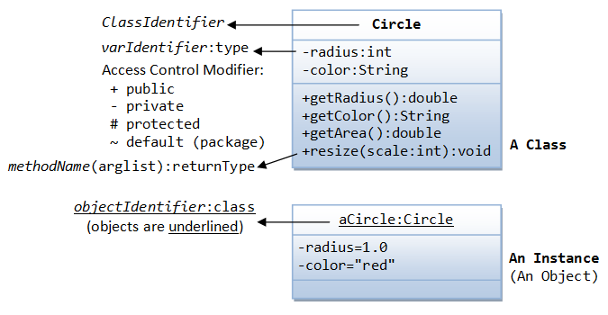
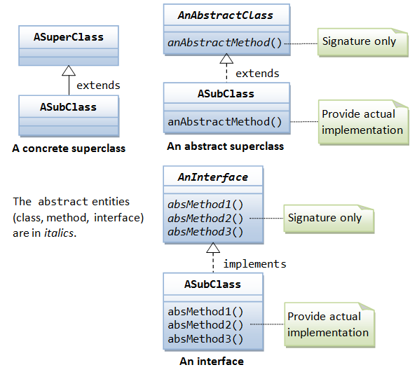

This chapter provides the technical references.
Keywords & Reserved Words
Java's keywords are:
- Primitive types:
byte,short,int,long,float,double,char,boolean. - Flow control:
if,else,switch,case,default,for,while,do,break,continue. - Access Control Modifiers:
private,public,protected. - Other Modifiers:
final(content cannot be modified),static,abstract,native,synchronized(locking in multithreading),transient(non-serialized variable),volatile(variable might be modified asynchronously in multithreading). - Method-related:
return,void. - Class-related:
class,interface,enum,super,this,new,import,package,extends,implements,instanceof. - Exception and Assertion:
try,catch,finally,throws,throw,assert. - Others:
strictfp(strict floating-point that conform to IEEE 754 specification, applicable to class and method).
There are two reserved words (not used currently): goto, const.
There are two boolean literals: true, false; and one special literal null for objects without references.
Note: JDK 1.4 added assert. JDK 1.5 added enum. There are 50 keywords/reversed words and 3 reserved literals, as of JDK 1.5,
Operators & Precedences
The entire list of operators in Java is summarized below:
- Assignment:
= - Arithmetic:
+,-,*,/,% - Increment and decrement:
++,-- - Comparison:
==,!=,>,<,>=,<= - Logical:
&&,||,!,^ - Bitwise:
&,|,~,^,<<,>>,>>> - Compound Assignment:
+=,-=,*=,/=,%=,&=,|=,^=,<<=,>>=,>>>= - Conditional:
?,: - Others:
new,instanceof,(type), dot (.), array index[]
The following table arranges the operators according to their precedences from the highest to the lowest (in groups).
| Category | Operator | Description | Associativity |
|---|---|---|---|
| Parentheses, Dot |
() () [] . |
Parenthesis Function call Array index Member variable/method accessor |
left to right |
| Unary Postfix Increment/Decrement |
expr++ expr-- |
Postfix increment Postfix decrement |
right to left |
| Unary Prefix Operators | ++expr --expr +expr -expr !expr ~expr |
Prefix increment Prefix decrement Prefix unary plus Prefix unary minus Prefix unary logical NOT (for boolean) Prefix unary bitwise NOT (for integers) |
right to left |
| Unary Prefix type-cast & object creation |
(type)expr new |
Prefix unary type casting Construct new instance |
right to left - |
| Arithmetic multiplicative |
* / % |
Multiplication Division Integer Modulus or Remainder |
left to right |
| Arithmetic additive |
+ - |
Addition, String concatenation Subtraction |
left to right |
| Bit-Shift |
>> >>> << |
Right signed bit-shift Right unsigned bit_shift Left bit-shift |
left to right |
| Comparison |
< <= > >= instanceof |
Less than Less than or equal to Greater than Greater than or equal to check type of an instance |
left to right |
| Equality Comparison |
== != |
Equality Not equal |
left to right |
| Bitwise AND | & |
Bitwise AND for integers Logical AND for booleans |
left to right |
| Bitwise XOR | ^ | Bitwise XOR for integers Logical XOR for booleans |
left to right |
| Bitwise OR | | | Bitwise OR for integers Logical OR for booleans |
left to right |
| Logical AND | && | Logical AND for booleans | left to right |
| Logical OR | || | Logical OR for booleans | left to right |
| Conditional | ? : | Shorthand if-else | - |
| Assignment & Compound Assignment |
= += -= *= /= %= &= |= ^= <<= >>= >>>= |
Assignment Addition compound assignment Subtraction compound assignment Multiplication compound assignment Division compound assignment Integer modulus compound assignment Bitwise AND compound assignment Bitwise OR compound assignment Bitwise XOR compound assignment Bit-left-shift compound assignment Bit-signed-right-shift compound assignment Bit-unsigned-right-shift compound assignment |
right to left |
Notes:
- Comparison operators (
==,!=,>,>=,<,<=) take precedence over Logical AND/OR operators (&&,||). Hence,x == 3 || x == 5 // is the same as (x == 3) || (x == 5) x >= 3 && x <= 5 // is the same as (x >= 3) && (x <= 5)
- Logical AND
'&&'takes precedence over logical OR'||'. Hence,x || y && z || w // x || (y && z) || w (take note!) x && y || z && w // (x && y) || (z && w)
'&','|'and'^', when apply tobooleans, perform logical operations as in logical AND (&&), OR (||) and XOR (^). However, the order of precedence is:'&','^','|','&&'and'||'.System.out.println(+++i)is interpreted asSystem.out.println(++(+i))and result in compilation error!System.out.println(+(++i))is valid.++++iis invalid as++(++i)results in++(value).- Most operators (such as addition) is left associative, i.e.,
1+2+3is interpreted as((1+2)+3). Some operators (such as assignment) is right associative, i.e.,i=j=k= 5is interpreted as(i=(j=(k=5))).
Classes
The syntax for defining a class is as follows:
public|protected|default // Access control modifier private|static // For nested class only abstract // Contain abstract methods final // Cannot be sub-classed class ClassName // Class identifier <G> // Generic formal type parameter extends ASingleSuperClass // Only one superclass implements Interface1,...,InterfaceN // Multiple interfaces allowed { class-body // Contains member variables, // constructors, member methods, // and other helper's methods. }
A public class is accessible by all the classes in the system. A protected class is accessible by classes in the same package and its subclasses. The default access control modifier is package or friendly, i,e, accessible by class in the same package only.
A nested class can have class modifier of private and static. A private nested class is accessible within the enclosing outer class. Static nested class belongs to the enclosing outer class instead of an instance of the outer class. A non-static nested class is called an inner class.
An abstract class contains one or more abstract methods. An abstract method is a method declaration with only signature and no implementation. An abstract class cannot be instantiated. To use an abstract class, you have to derive a subclass which provides implementation to all the abstract methods. You can then instantiate the concrete subclass. An abstract class (and also interface) is used to specify a "unified public interface" which is independent from its actual implementation, which enables programmers to program at the interface, instead of the implementation.
A final class cannot be sub-classed.
JDK 1.5 introduces a new feature called generics, which allows you to abstract over types. You can be generic about type in the definition using a type formal parameter (e.g., ArrayList<G>), but specific in the types during the instantiation (e.g., ArrayList<Integer>).
A class may "extends" from one and only one superclass. The subclass inherits all the variables and methods of its direct superclass and ancestors. Java supports only single inheritance.
A class may "implements" one or more interfaces. An interface contains a set of abstract methods and possible some constants (public static final variables) to provide common contract, protocol for communication between classes. A class implements an interface must provide implementation to all the abstract methods declared in the interface. An interface, as its name implied, provide a "unified public interface" for all classes that implement the interface. This enables programmers to program at the interface, instead of the actual implementation.
The class body may contain member variables, constructors, public methods, private helper methods and others.
Class are organized in hierarchy, i.e., superclass and subclass.
Variables
The syntax for declaring a variable is as follows:
public|protected|default|private // Access control modifier static|default // Class vs. instance variable final // Reference cannot be modified transient // Need not be serialized volatile // For threads type variableIdentifier // type and identifier
A public variable is accessible by all the classes. A protected variable is accessible by classes in the same package and the derived subclass. The default access control modifier allows access by classes in the same package. A private variable is accessible only within this class definition.
A static variable (or class variable) belongs to the class. All the instances of this class share the same storage for the static variable. The default non-static variable (or instance variable) belongs to the instances. Each instance has its own copy of instance variables.
The reference to a final variable cannot be modified once assigned. For primitive variables, they are constants. For variable of reference type, the reference value cannot be changed once assigned, but the object referenced can be modified.
A transient variable will not be serialized, when a state of the object is serialized (e.g., to an external storage or network).
Methods
The syntax for declaring a method is as follows:
public|protected|default|private // Access control modifier static|default // Class vs. instance method abstract // No implementation final // Subclass cannot override native // Written in native codes synchronized // Thread-safe, lock the object <G> // Generic type formal parameter returnType methodName (argumentList) throws Exception1,...,ExceptionN // Pass these Exceptions to caller { methodBody; }
A method receives zero or more arguments from its caller, carries out the operations defined in the body, and returns a primitive value, or a reference to an object, or void (i.e., nothing) to the caller. A method that is not returning void must contain a return statement, which returns a value to the caller of the type as declared in the method's signature.
Method's arguments of primitive types are passed by value. Method’s arguments of reference types (i.e., objects) are passed by reference (i.e., the handle or pointer is passed). [Strictly speaking, all arguments are passed by value. For primitive types, a value is copied and passed into the method and the original value cannot be accessed or modified. For reference types, a copy of the reference is passed into the method and the original reference cannot be changed. In the method’s body, you can use the passed reference to modify the object or calling its methods.]
Method modifiers public, protected, package, private, static carry the same meaning as variables.
An abstract method declares only the method's signature, without the actual implementation. A method's signature consists of the method name, argument list and the return type. Implementation of the abstract method is to be provided by a subclass.
A final method cannot be overridden in the subclasses.
A native method is not written in Java, but in native platform format, written in other languages like C.
A synchronized method is thread-safe. The lock of the object (where the method is defined) must be secured before the synchronized method can be executed. This locks out the object from the other threads. The lock is released after the method completes.
Java supports method overloading, which means that the same method name can have a few implementation differentiated by the type, number and order of arguments.
A constructor is a special method, which has the same name as the class but without the return type. Constructors are used to initialize an instance. In Java, we use new operator followed by a call to a constructor to instantiate an object.
REFERENCES & RESOURCES
- [TODO]